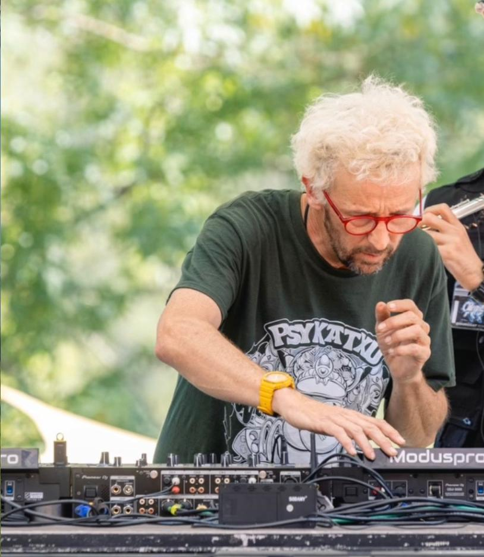
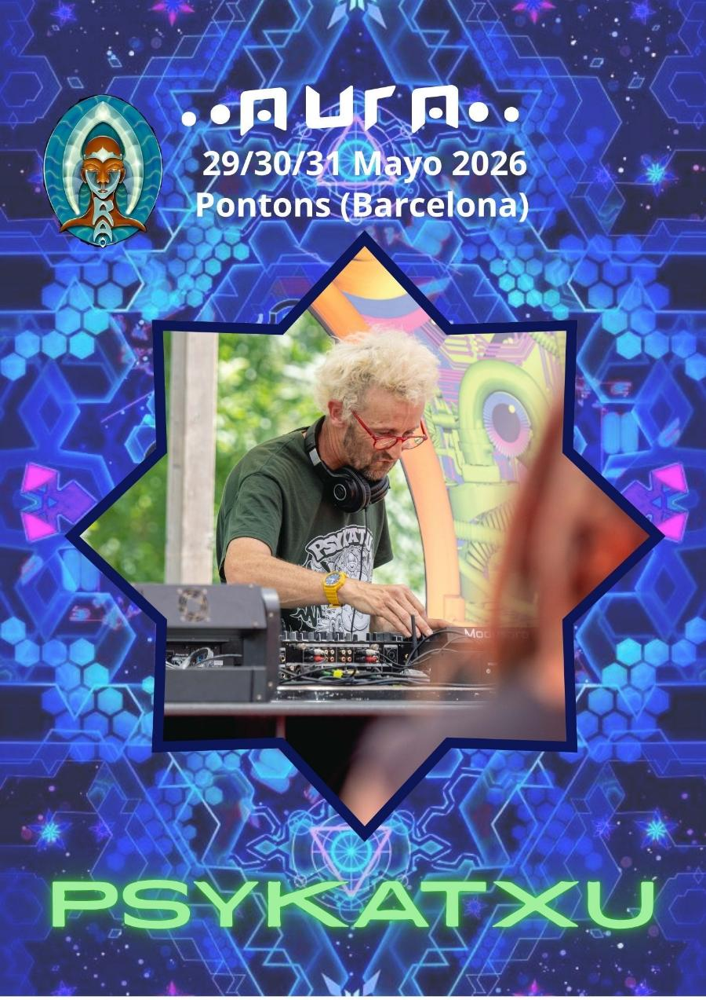
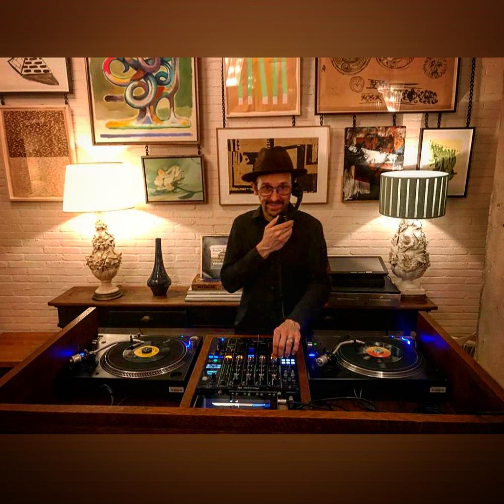
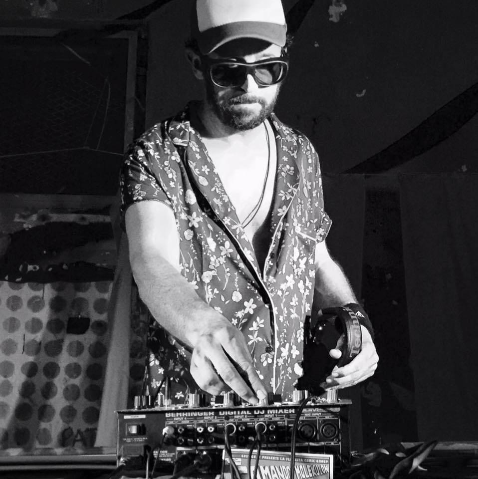
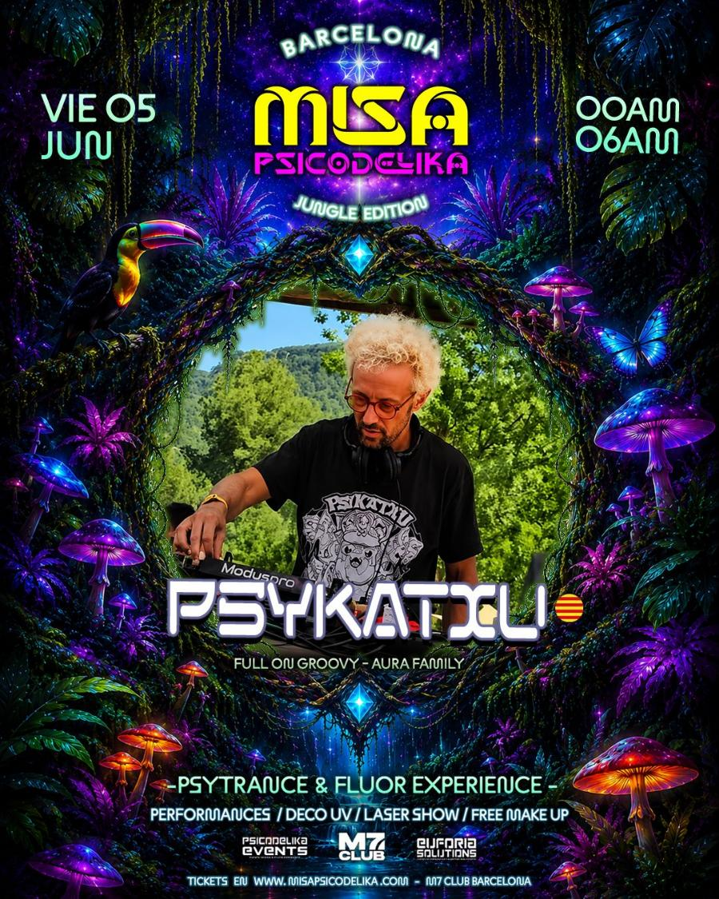

DJ
Álvaro Solache
Sesiones para recepción, cena, fiesta y after, con repertorio abierto y veinte años de oficio.
- Cuatro proyectos según el estilo
- Sesión preparada con el briefing
Música y espectáculos · Penedès y Barcelona
DJ, grupos en directo, espectáculos de cultura popular y el sonido y la luz que los hacen funcionar. Lo pensamos con el guion del evento delante y lo llevamos con un solo interlocutor.

Los servicios
Se pueden pedir sueltas o juntas. Cuando van juntas, la música, el directo y la técnica comparten guion, horarios y responsable, y nadie tiene que coordinar a tres proveedores.
DJ
Sesiones para recepción, cena, fiesta y after, con repertorio abierto y veinte años de oficio.
Directo
Formatos pequeños y medianos ligados a la cultura catalana: voces, havaneras, folk y grallers.
Espectáculos
Del pasacalles de grallers al espectáculo familiar o la cobla, para dar a un momento del evento su escena.
Técnica
Equipo y técnico de sonido e iluminación durante todo el evento, para el DJ, el directo y los parlamentos.
DJ desde 2004 · Penedès y Barcelona
Veinte años detrás de los platos y la producción del Aura Open Air Festival a las espaldas. En un evento eso se traduce en una cosa concreta: la música va donde tiene que ir en cada momento, sin que nadie tenga que pedirlo dos veces.
Trabajo con plataformas de streaming profesionales para DJ, así que la música no está limitada a lo que llevo en el disco duro. Si a mitad de la cena alguien pide algo, suena dos minutos después. Y si el grupo es internacional, la sesión se mueve con él.
Antes del evento acordamos la línea musical: lo que sí, lo que no y lo que no puede faltar. Con el timing del evento delante, porque la música de la recepción, la de la cena y la de las dos de la mañana no son la misma conversación.
Vengo de producir eventos y festivales, así que hablo el idioma del resto del equipo: técnica, catering, protocolo. Sé cuándo hay que bajar para un discurso y cuándo hay que empujar porque la pista se está enfriando.
Los nombres
Cada estilo tiene su nombre, porque cada público espera una cosa distinta. Para un evento se elige el que encaja, y eso se decide en el briefing.
Nombre general
Eventos de empresa, celebraciones y bodas. Repertorio abierto y sesión construida a partir del briefing: es el nombre con el que trabajo en producción de eventos.
Trance
El proyecto de psytrance, en festivales y clubes. Aura Open Air Festival, Misa Psicodélika y la escena de Barcelona.
House · dúo
Dúo de house. Dos cabinas trabajando a la vez, para cuando el evento pide una pista sostenida y con cuerpo.
Funky · world music
Funky y world music. El registro más cálido y bailable, el que mejor funciona en una cena, un vermut o una fiesta con público mezclado.
Formatos
Música de fondo que deja hablar. Volumen de conversación, selección cuidada, nada que obligue a levantar la voz.
Acompaña sin invadir y va subiendo con los platos, de forma que al llegar a los postres la sala ya está donde queremos.
La parte que la gente recuerda al día siguiente. Lectura de pista en directo y repertorio abierto para sostenerla las horas que haga falta.
Una década concreta, un país, la banda sonora de la marca. Se prepara a medida a partir del briefing.
Formato festival, con lo que implica de producción: horarios, cambios de artista, técnica y seguridad.
Si Events Penedès lleva la producción, la sesión va dentro del mismo presupuesto y del mismo interlocutor. Sin coordinar a dos proveedores.
Música en directo
Formatos pequeños y medianos, muy adaptables y ligados a la cultura catalana y del Penedès. Estos son los que más recomendamos para un evento.
Destacado
A cappella
Cuatro voces sin instrumentos, ganadores de «Oh happy day» de TV3. Su espectáculo «Lo país mèlt» recorre canciones de todo el territorio de habla catalana.
Destacado
Havaneras
Havaneras con Arnau Tordera I, en trío de voces o en solitario con guitarra. Para un atardecer entre viñas o una sobremesa larga.
Destacado
Pop rural
Pop rural intimista en dúo de voz y guitarras. Un concierto cercano para una cata, un vermut o una cena tranquila.
Destacado
Folk
Folk d’extraradi: gralla, flabiol, teclados y batería. Un directo con energía que junta tradición y público joven.
Destacado
Ball de gralles
Grallers con percusión híbrida y electrónica que convierten los éxitos de la pista en una fiesta de cultura popular.
¿Buscas otro estilo? Te conseguimos cualquier propuesta musical y nos ocupamos del sonido. Pedir música en directo
Espectáculos
No todo es música de fondo o pista de baile. Hay momentos que piden un espectáculo: la llegada del grupo, el brindis, el cierre de una jornada.
Grallers y percusión para recibir al grupo, acompañar un paseo entre viñas o abrir la fiesta. Ruido del bueno, y muy de aquí.
Una exhibición o un taller para hacer pinya con una colla. Con grallers al lado, es la escena más reconocible del Penedès.
Para jornadas con hijos e hijas: música y espectáculo pensados para que los pequeños participen y los mayores también lo disfruten.
Coro, cobla u orquesta para una celebración grande, una gala o un aniversario de empresa. Se plantea con tiempo, con el espacio y la técnica delante.
Sonido e iluminación
La mayoría de grupos no traen equipo, y un discurso que no se oye arruina una cena. Por eso la técnica se pide con la música, no después.
Dimensionado para el espacio y el público: no es lo mismo una sala de barricas que una explanada entre viñas.
Micrófonos para bienvenidas, entregas de premios y presentaciones, y una mezcla que no se come la voz.
Luz de ambiente para el espacio y luz de escenario para el directo y la pista, para cuando cae el sol.
Una persona a cargo de la técnica durante todo el evento: montaje, prueba de sonido, cambios entre actuaciones y desmontaje.
Potencia eléctrica, horarios de montaje, límites de volumen y vecinos. Lo revisamos con el espacio antes de que sea un problema.
Quien produce festivales coordina la técnica: el DJ, los grupos y el equipo trabajan con los mismos horarios y el mismo interlocutor.
Ideas que encajan
Algunas combinaciones que funcionan en el Penedès. Son un punto de partida: el programa final sale del briefing.
Bienvenida
El autocar llega y el grupo entra al espacio con música de calle. Los primeros cinco minutos ya marcan el tono.
Cata
Una cata entre viñas que acaba con havaneras cuando baja el sol. Sin escenario, con un sonido discreto.
Vermut
Voz y guitarra para un vermut o una pausa larga entre sesiones de trabajo. Cercano y sin volumen.
Cena
Un grupo a cappella que aparece entre plato y plato y deja la cena con algo que contar. Después, el DJ toma el relevo.
Castells
La mañana con la colla y los grallers, la tarde con cata y la noche con una sesión que recoge todo el día.
Marca
Una sesión temática construida con la marca: su década, sus países, sus canciones. Para un aniversario o un lanzamiento.
Producción
29, 30 y 31 de mayo de 2026 · Pontons (Barcelona)
Soy el responsable de producción del Aura Open Air Festival. Es la escuela más exigente que conozco: horarios que no se pueden mover, artistas que llegan tarde, meteorología, aforo, seguridad y un público que no perdona un silencio.
Esa experiencia es la que después se nota en un evento de empresa de sesenta personas, donde el margen de error es el mismo pero nadie lo ve.

En cabina
De la sesión de vinilo en una sala pequeña al escenario de un festival. El formato cambia; el criterio, no.



Trayectoria
2004
Empieza el oficio. De ahí arranca todo lo demás.
2004 — hoy
Salas, fiestas privadas, eventos de empresa y festivales. Públicos de treinta personas y de varios miles, que no se tratan igual.
Actualidad
Responsable de producción del festival: programación, artistas, logística, técnica y seguridad.
Actualidad
La sesión de DJ como una pieza más de la producción de eventos en el Alt Penedès, junto a las localizaciones y las actividades de equipo.
¿Quieres escuchar antes de decidir? Pídeme una sesión de referencia y te la paso.
Peticiones especiales
Un estilo concreto, un artista que te gusta, un espectáculo que viste en otro sitio. Cuéntanos fecha, lugar, cuánta gente y qué quieres que pase: te decimos qué es posible, con disponibilidad y precio, y si hace falta te proponemos también el espacio y el resto de la producción.